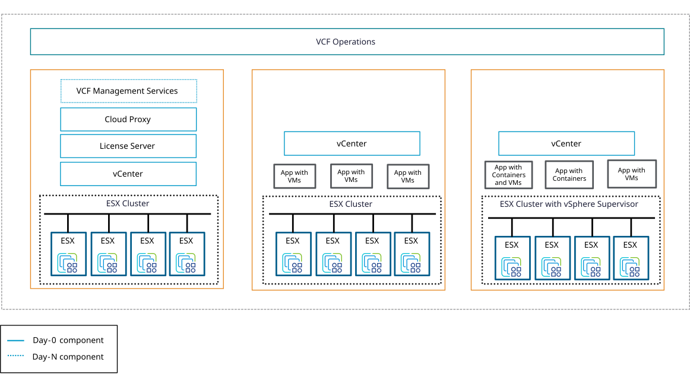

가상화 계층과 관리 도구를 구성합니다
하이퍼바이저와 중앙 관리 도구로 구성되며, 클러스터 단위로 자원을 묶어 가상 머신의 배치와 가용성을 관리합니다.

소프트웍스가 하는 일
하나의 대형 클러스터 구성은 관리가 단순하지만, 장애 발생 시 영향을 받는 범위가 커질 수 있습니다. 소프트웍스는 고객사의 업무 중요도와 장애 시 감당 가능한 가용성 기준을 함께 검토하여, 장애 위험을 최소화하는 가장 효율적인 클러스터 분리 아키텍처를 제안합니다.